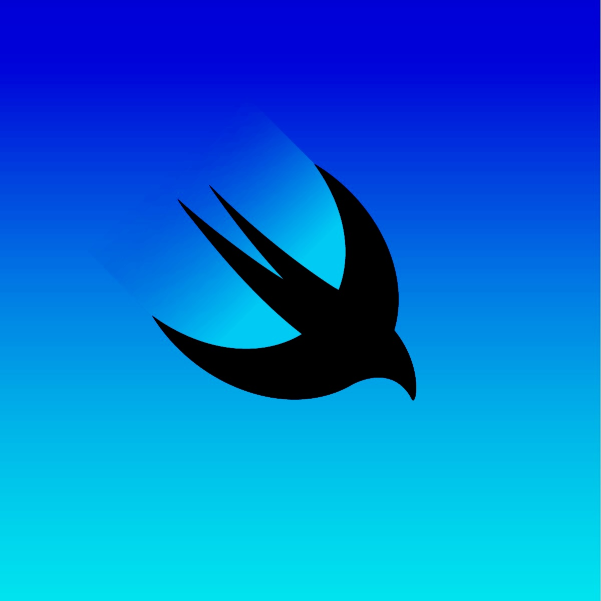

29, Aug 2024
Swift: Guard Statements
Guard statements are a powerful feature in Swift that allow you to early exit from a function if a certain condition is not met. They're a clean and concise way to avoid deeply nested `if-else` statements, making your code more readable and maintainable, so let's delve into what guard statements are, how to use them effectively!

Understanding Guard StatementsA guard statement consists of the `guard` keyword followed by a condition and an `else` clause. If the condition is true, the execution continues within the function. However, if the condition is false, the `else` clause is executed, which must contain a `return`, `continue`, `break`, or `throw` statement to exit the current scope.
func greet(name: String?) {
guard let name = name else {
print("Name is nil")
return
}
print("Hello, \(name)!")
}
In the above example, the `guard` statement checks if `name` is not `nil`. If it's `nil`, the `else` clause is executed, and the function returns early. Otherwise, the execution continues with the greeting message. Think of having multiple checks on your input:
func greet(name: String?) {
guard let name = name else { return }
guard !name.isEmpty else { return }
guard name.rangeOfCharacter(from: .decimalDigits) == nil else { return }
print("Hello, \(name)!")
}
greet(name: "Swift") // Hello, Swift!
greet(name: "Swift1") // Nothing
greet(name: "") // Nothing
greet(name: nil) // Nothing
Re-writing the same logic with if-else nesting would yield:
func greet(name: String?) {
if let name = name {
if !name.isEmpty {
if name.rangeOfCharacter(from: .decimalDigits) == nil {
print("Hello, \(name)!")
}
}
}
}
Hadooooken!!!! ... Brownie points if you get the reference!
Key Benefits of Guard Statements•
Improved Readability: Guard statements make your code more readable by reducing the indentation level of nested `if-else` statements.
•
Early Exit: They allow you to exit a function early if a certain condition is not met, preventing unnecessary code execution.
•
Error Handling: Guard statements can be used to handle errors and exceptions gracefully.
•
Conciseness: They provide a concise, ordered way to express conditional logic.
Common Use Cases•
Error Handling: Check for errors and return early if necessary.
•
Input Validation: Validate user input and return if it's invalid.
•
Optional Unwrapping: Safely unwrap optionals and return if they're `nil`.
•
Precondition Checks: Ensure that preconditions are met before proceeding with a task.
Best Practices•
Keep conditions simple: Avoid complex conditions that can be difficult to read. Try grouping multiple similar conditions into simpler check functions.
•
Use meaningful error messages: If you're using guard statements for error handling, provide informative error messages/or types.
Guard statements are a valuable tool in Swift that can help you write cleaner, more readable, and maintainable code. By understanding their syntax and use cases, you can effectively use them to improve the structure and flow of your functions. Guard statements are so useful that you may even consider using the same pattern even if your language doesn't support `guard` as a first class citizen.